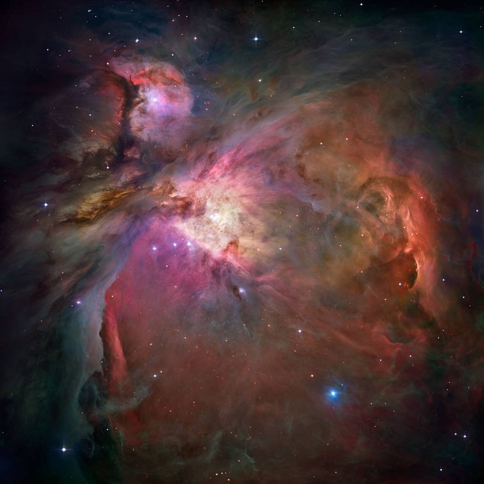
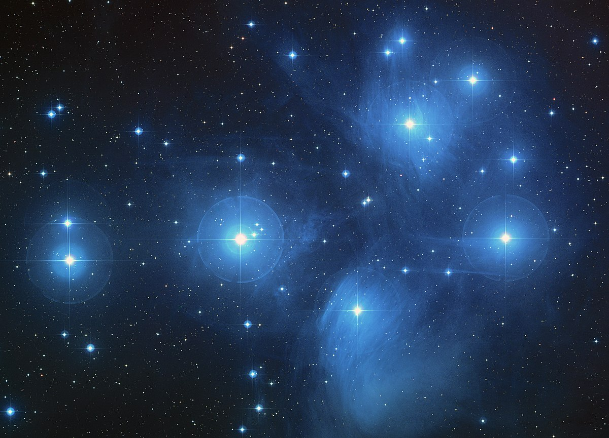
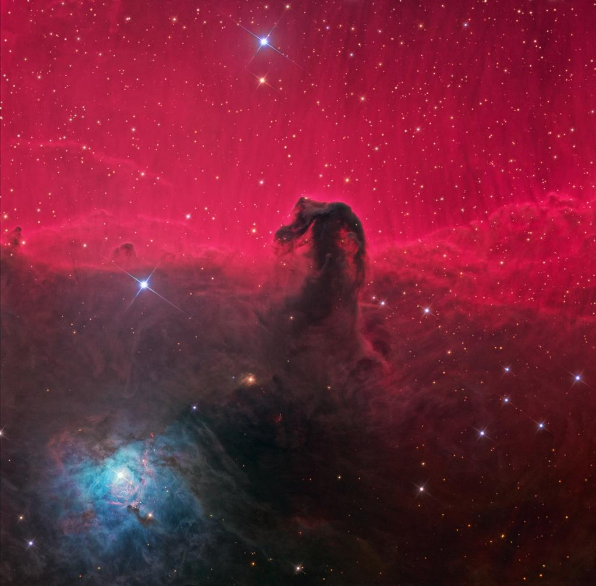
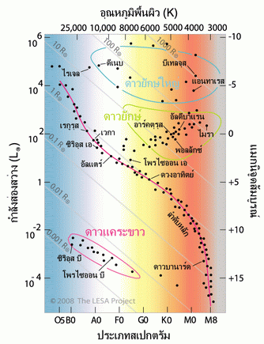
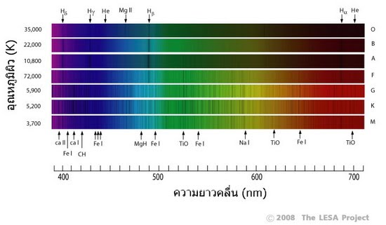

เนบิวลา
ดาวเกิดจากการรวมตัวของแก๊สและฝุ่นในอวกาศ (Interstellar medium) เมื่อมีมวล มวลมีแรงดึงดูดซึ่งกันและกันตามกฎความโน้มถ่วงแห่งเอกภพ (The Law of Universal) ของนิวตันที่มีสูตรว่า F = G (m1m2/r2) แรงดึงดูดแปรผันตามมวล มวลยิ่งมากแรงดึงดูดยิ่งมาก เราเรียกกลุ่มแก๊สและฝุ่นซึ่งรวมตัวกันในอวกาศว่า “เนบิวลา” (Nebula) หรือ “หมอกเพลิง” เนบิวลาเป็นกลุ่มแก๊สที่ขนาดใหญ่หลายปีแสง แต่เบาบางมีความหนาแน่นต่ำมาก องค์ประกอบหลักของเนบิวลาคือแก๊สไฮโดรเจน เนื่องจากไฮโดรเจนเป็นธาตุที่มีโครงสร้างพื้นฐาน ซึ่งเป็นธาตุตั้งต้นของทุกสรรพสิ่งในจักรวาล
เนบิวลามีอุณหภูมิต่ำ เนื่องจากไม่มีแหล่งกำเนิดความร้อน ในบริเวณที่แก๊สมีความหนาแน่นสูง อะตอมจะยึดติดกันเป็นโมเลกุล ทำให้เกิดแรงโน้มถ่วงดึงดูดแก๊สจากบริเวณโดยรอบมารวมกันอีก ทำให้มีความหนาแน่นและมวลเพิ่มขึ้นอีกจนกระทั่งอุณหภูมิภายในสูงประมาณ 10 เคลวิน มวลที่เพิ่มขึ้นทำให้พลังงานศักย์โน้มถ่วงของแต่ละโมเลกุลที่ตกเข้ามายังศูนย์กลางของกลุ่มแก๊ส เปลี่ยนรูปเป็นพลังงานความร้อน และแผ่รังสีอินฟราเรดออกมา
ต่อมาเมื่อกลุ่มแก๊สมีความหนาแน่นสูงขึ้นจนความร้อนภายในไม่สามารถแผ่ออกมาได้ อุณหภูมิภายในแกนกลางจึงสูงขึ้นอย่างรวดเร็ว มวลของแก๊สมีแรงโน้มถ่วงสูงจนเอาชนะแรงดันซึ่งเกิดจากการขยายตัวของแก๊สร้อน กลุ่มแก๊สจึงยุบตัวเข้าสู่ศูนย์กลางจนมีอุณหภูมิสูงถึง 10 ล้านเคลวิน จุดปฏิกิริยานิวเคลียร์ฟิวชันทำให้อะตอมของไฮโดรเจนหลอมรวมกันเป็นธาตุใหม่คือ ฮีเลียม มวลบางส่วนเปลี่ยนรูปเป็นพลังงาน (นิวเคลียร์ฟิวชัน) ตามสมการ E = mc2 ดาวฤกษ์จึงอุบัติขึ้นมา
ดาวฤกษ์ที่เกิดขึ้นใหม่มีอุณหภูมิสูงประมาณ 25,000 K เป็นดาวสเปกตรัมประเภท O แผ่รังสีเข้มสุดในช่วงอัลตราไวโอเล็ต เนบิวลาที่ห่อหุ้มดาวดูดกลืนพลังงานจากรังสีอัลตราไวโอเล็ต และแผ่รังสีเข้มสุดในช่วง H-alpha ซึ่งมีความยาวคลื่น 656 nm ออกมาทำให้เรามองเห็นเป็น “เนบิวลาสว่าง” (Diffuse Nebula) สีแดง ได้แก่ เนบิวลาสว่างใหญ่ในกลุ่มดาวนายพราน (M 42 Great Orion Nebula) ซึ่งเห็นได้ว่า ใจกลางของเนบิวลาสว่างมีดาวฤกษ์เกิดใหม่อยู่ภายใน
เนื่องจากเนบิวลามีแก๊สและฝุ่นอยู่หนาแน่น บางครั้งอนุภาคขนาดใหญ่เป็นอุปสรรคขวางกั้นการแผ่รังสี จึงเกิดการกระเจิงของแสง (Scattering) ทำให้มองเห็นเป็นเนบิวลาสีฟ้า เช่นเดียวกับที่การกระเจิงของแสงอาทิตย์ในบรรยากาศโลกที่ทำให้ท้องฟ้าเป็นสีฟ้า เราเรียกเนบิวลาประเภทนี้ว่า “เนบิวลาสะท้อนแสง” (Reflection Nebula) ตัวอย่างเช่น เนบิวลาในกระจุกดาวลูกไก่ (M45 Pleiades)
อย่างไรก็ตามบางส่วนของเนบิวลาเป็นกลุ่มแก๊สที่มีอุณหภูมิต่ำอยู่อย่างหนาแน่น กลุ่มแก๊สเหล่านี้เหล่านี้บดบังแสงสว่างจากดาวฤกษ์เกิดใหม่หรือเนบิวลาสว่างซึ่งอยู่ด้านหลัง เราจึงมองเห็นเป็น “เนบิวลามืด” (Dark Nebula) เช่น เนบิวลารูปหัวม้าในกลุ่มดาวนายพราน (Horsehead Nebula)
แม้ว่าในตำราเรียนจะแบ่งเนบิวลาออกเป็น 3 ประเภทคือ เนบิวลาสว่าง เนบิวลาสะท้อนแสง และเนบิวลามืด ในความจริงแล้วเนบิวลาทั้งสามชนิดเป็นเพียงปรากฎการณ์ซึ่งปรากฏให้เห็นเฉพาะในมุมมองจากโลก จะเห็นว่า เนบิวลาไทรฟิด (M20 Trifid Nebula) เป็นกลุ่มแก๊สซึ่งมีทั้งเนบิวลาสว่าง เนบิวลาสะท้อนแสง และเนบิวลามืด อยู่ในตัวเดียวกัน ดาวเกิดใหม่ท่ีอยู่ภายในแผ่รังสีออกมากระตุ้นให้กลุ่มแก๊สท่ีอยู่บริเวณรอบๆ แผ่รังสีปรากฏเป็นเนบิวลาสว่างสีแดง แต่มีกลุ่มแก๊สหนาทึบบางส่วนมาบังแสงสว่างทำให้มองเห็นเป็นเนบิวลามืด และเกิดการกระเจิงของแสงที่กลุ่มแก๊สที่อยู่ด้านหลัง ทำให้มองเห็นเป็นเนบิวลาสะท้อนแสงสีน้ำเงิน

ดาวลำดับหลัก
ขนาดของดาวฤกษ์ขึ้นอยู่กับแรงดันแก๊สร้อนซึ่งดันออกจากแก่นกลางสู่พื้นผิว และมวลของดาวซึ่งทำให้เกิดแรงโน้มถ่วง หากอัตราการเกิดฟิวชันสูงเกินไป แก๊สที่แก่นกลางจะดันดาวให้ขยายตัวออก เมื่อแก๊สขยายตัวอุณหภูมิจะลดต่ำลง (ตามกฎของแก๊ส) ทำให้อัตราการเกิดฟิวชันลดลงด้วย ในทางกลับกันหากอัตราการเกิดฟิวชันต่ำเกินไป แก๊สที่แก่นกลางจะเย็นตัวลง แรงดันแก๊สลดลง เนื้อสารของดาวยุบตัวลงมา ทำให้เกิดความดันและอุณหภูมิสูงขึ้น เพิ่มอัตราการเกิดฟิวชันให้สูงขึ้น ระบบกลไกนี้ช่วยรักษาสมดุลของดาวฤกษ์ ให้มีอัตราการเกิดปฏิกิริยาฟิวชันคงที่สม่ำเสมอเกือบตลอดทั้งชีวิตของดาว อายุขัยของดาวในช่วงเวลานี้เราเรียกว่า “ดาวลำดับหลัก” (Main sequence stars)
เมื่อพิจารณาในแผนภาพ H-R ในภาพที่ 1 จะเห็นว่า ดาวส่วนใหญ่จะอยู่ในลำดับหลัก ทั้งนี้เนื่องจากดาวใช้เวลา 80% ของอายุขัยอยู่ในลำดับหลัก ดาวลำดับหลักสีน้ำเงินมีอุณหภูมิสูงและมีกำลังส่องสว่างมากกว่าดาวลำดับหลักสีแดง เพราะว่า ดาวลำดับหลักสีน้ำเงินมีมวลตั้งต้นสูงมาก จึงมีขนาดใหญ่ แก๊สมวลมากกดทับกัน ทำให้ดาวมีอุณหภูมิสูงจนแผ่รังสีที่มีความยาวคลื่นเข้มสุดในช่วงรังสีอัลตราไวโอเล็ต ส่วนดาวสีแดงมีมวลตั้งต้นน้อย มีขนาดเล็ก แก๊สจำนวนน้อยกดทับกัน ทำให้ดาวมีอุณหภูมิต่ำ แผ่รังสีที่มีความยาวคลื่นเข้มสุดในช่วงรังสีอินฟราเรด
เมื่อพิจารณาเปรียบเทียบสเปกตรัมของดาวแต่ละประเภทจะพบองค์ประกอบดังนี้
ดาวสเปกตรัม O อุณหภูมิมากกว่า 25,000 K มีเส้นดูดกลืนของไฮโดรเจนอยู่อย่างเบาบาง เนื่องจากดาวมีอุณหภูมิสูงมากกว่าสามหมื่นเคลวิน ประจุไม่สามารถเกาะตัวเป็นอะตอม จึงอยู่ในสถานะไอโอไนเซชัน (Ionization)
ดาวสเปกตรัม B มีอุณหภูมิพื้นผิว 25,000 - 10,000 K มีเส้นดูดกลืนของไฮโดรเจนและฮีเลียม เนื่องจากดาวมีอุณหภูมิต่ำลงพอที่ประจุจะจับตัวกันเป็นอะตอมได้แล้ว
ดาวสเปกตรัม A มีอุณหภูมิพื้นผิว 10,000 - 8,000 K อุณหภูมิประมาณ10,000 - 25,000 K มีเส้นดูดกลืนของไฮโดรเจนชัดเจนยิ่งขึ้น เนื่องจากดาวมีอุณหภูมิต่ำกว่าสเปกตรัม B
ดาวสเปกตรัม F มีอุณหภูมิพื้นผิว 8,000 - 6,000 K ยังคงมีเส้นดูดกลืนของไฮโดรเจน และเริ่มมีเส้นดูดกลืนอะตอมของธาตุหนักหลายชนิด เช่น แคลเซียม
ดาวสเปกตรัม G มีอุณหภูมิพื้นผิว 6,000 - 5,000 K เช่น ดวงอาทิตย์ มีเส้นดูดกลืนของทั้งธาตุหนักและธาตุเบาหลายชนิด เช่น ไฮโดรเจน แคลเซียม และเหล็ก เป็นต้น
ดาวสเปกตรัม K มีอุณหภูมิพื้นผิว 5,000 - 4,000 K มีเส้นดูดกลืนของทั้งธาตุหนักและธาตุเบาหลายชนิด เช่น ไฮโดรเจน แคลเซียม และเหล็ก เป็นต้น
ดาวสเปกตรัม M มีอุณหภูมิพื้นผิว 4,000 - 3,000 K มีเส้นดูดกลืนของโมเลกุล เช่น ไททาเนียมออกไซด์ (TiO) และไฮโดรคาร์บอน (CH) เนื่องจากที่อุณหภูมิประมาณ 3,000 เคลวิน อะตอมสามารถเกาะตัวกันเป็นโมเลกุล
ธาตุต่างๆ บนผิวดาวมีองค์ประกอบเคมีที่หลายหลาก สืบเนื่องจากระดับพลังงานที่อะตอมดูดกลืน ซึ่งจะแทนสัญลักษณ์ด้วยตัวเลขโรมัน แสดงระดับของการไอโอไนเซชัน เช่น Si I หมายถึง ซิลิกอนปรกติซึ่งไม่มีการเสียอิเล็กตรอน Si II หมายถึงซิลิกอนที่สูญเสียอีเลคตรอน 1 ตัว Si III หมายถึง ซิลิกอนซึ่งสูญเสียอิเล็กตรอน 2 ตัว
ดวงอาทิตย์มีอุณหภูมิพื้นผิว 5,800 K จัดเป็นสเปกตรัม G2 มีเส้นดูดกลืนเรียงตามความเข้มจากมากไปน้อยดังนี้ Ca II, Fe II, Fe I, H และ Ca I ตามลำดับ จะเห็นว่าอุณหภูมิระดับนี้สูงพอที่จะทำให้ อะตอมของแคลเซียมและเหล็ก สูญเสียอิเล็กตรอน